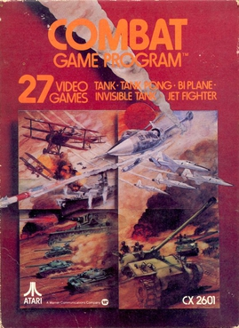
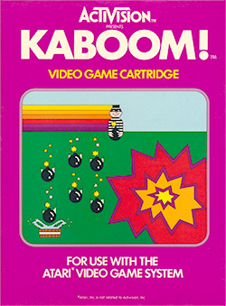
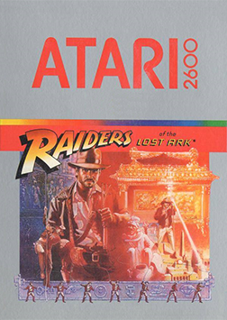
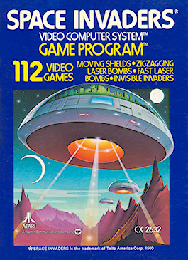
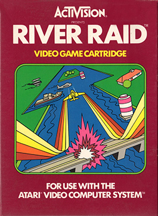
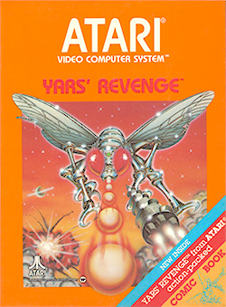
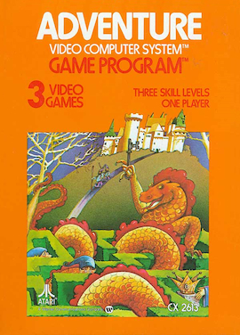
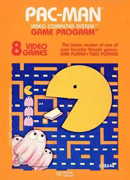
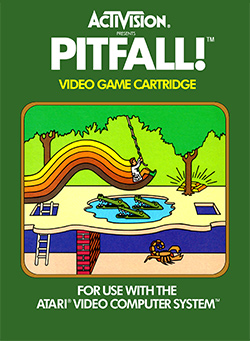

GENERACION 2 · 8 BITS · ATARI
TOP 10 ATARI 2600 MUNDIAL
LO QUE LA CRITICA AMA · CONSENSO 2026
CONSENSO CRITICO 2026
DEL #10 AL #1
Cruce de critica retro (SVG, CBR, GamesRadar, RetroDodo) e hitos historicos verificables. El Atari 2600 fue el origen de casi todo lo que vino despues: el primer Easter egg, la primera disenadora reconocida, el primer killer app. Empezamos desde abajo.
#10
TOP

Atari 2600
TARROVISIONCH 10
NO SIGNAL
Inserta gameplay aqui
COMBAT
Atari 2600 · 1977 · ATARI
▶ POR QUEEl juego pack-in que veniia incluido con la consola. Tanques, aviones y biplanos en 27 variantes -para millones fue el PRIMER videojuego que jugaron en su vida.
#9
TOP

Atari 2600
TARROVISIONCH 09
NO SIGNAL
Inserta gameplay aqui
KABOOM!
Atari 2600 · 1981 · ACTIVISION
▶ POR QUEDisenado por Larry Kaplan (cofundador de Activision). Usabas el paddle giratorio para atrapar bombas de un ladron loco. Simple, adictivo, y el paddle se sentia como un instrumento.
#8
TOP

Atari 2600
TARROVISIONCH 08
NO SIGNAL
Inserta gameplay aqui
MISSILE COMMAND
Atari 2600 · 1981 · ATARI
▶ POR QUEPort del arcade de 1980. Defender seis ciudades de una lluvia de misiles con una mira que se sentia tensa y estrategica. El desarrollador confeso que le dio pesadillas nucleares reales.
#7
TOP

Atari 2600
TARROVISIONCH 07
NO SIGNAL
Inserta gameplay aqui
RAIDERS OF THE LOST ARK
Atari 2600 · 1982 · ATARI
▶ POR QUEUno de los primeros juegos con licencia de pelicula hecho en serio: mapa gigante, inventario, puzzles reales. Adelantado a su epoca para 1982.
#6
TOP

Atari 2600
TARROVISIONCH 06
NO SIGNAL
Inserta gameplay aqui
SPACE INVADERS
Atari 2600 · 1980 · ATARI
▶ POR QUEEl puerto que convirtio al Atari 2600 en un exito real. Vendio mas de 2 millones de copias y disparo las ventas de la consola: el primer 'killer app' de la historia de los videojuegos.
#5
TOP

Atari 2600
TARROVISIONCH 05
NO SIGNAL
Inserta gameplay aqui
RIVER RAID
Atari 2600 · 1982 · ACTIVISION
▶ POR QUEDisenado y programado en solitario por Carol Shaw, la primera disenadora de videojuegos mujer ampliamente reconocida de la historia. Scroll vertical fluido, mas de un millon de copias vendidas.
#4
TOP

Atari 2600
TARROVISIONCH 04
NO SIGNAL
Inserta gameplay aqui
YARS' REVENGE
Atari 2600 · 1982 · ATARI
▶ POR QUEEl juego ORIGINAL mas vendido de toda la consola -no un port de arcade, sino disenado desde cero para el 2600. Howard Scott Warshaw creo un shooter abstracto y adictivo que se convirtio en el buque insignia de Atari.
#3
PODIO

Atari 2600
TARROVISIONCH 03
NO SIGNAL
Inserta gameplay aqui
ADVENTURE
Atari 2600 · 1980 · ATARI
▶ POR QUEWarren Robinett escondio su nombre en una sala secreta como protesta porque Atari no daba credito a los disenadores. Nacio asi el termino 'Easter egg' en los videojuegos, descubierto por un chico de 15 años.
#2
PODIO

Atari 2600
TARROVISIONCH 02
NO SIGNAL
Inserta gameplay aqui
PAC-MAN
Atari 2600 · 1982 · ATARI
▶ POR QUEEl juego mas vendido de toda la consola: mas de 8 millones de copias. El problema es que la conversion parpadeaba y se veia muy inferior al arcade original -la decepcion mas famosa de la historia de Atari.
#1
EL TRONO

Atari 2600
TARROVISIONCH 01
NO SIGNAL
Inserta gameplay aqui
PITFALL!
Atari 2600 · 1982 · ACTIVISION
▶ POR QUEDavid Crane diseño 255 pantallas de selva, trampas y tesoros en apenas 4 kilobytes de memoria. El padre del genero plataformas de accion, y el juego mas aclamado por la critica de toda la consola.
ANALISIS DEL TOP
LA CUNA DE LOS ORIGENES
Este top no es solo nostalgia: cada juego marco un 'primero' que definio la industria entera. El primer Easter egg (Adventure), la primera disenadora mujer reconocida (River Raid), el primer killer app (Space Invaders), el padre del plataformas de accion (Pitfall). El 2600 escribio las reglas antes de que existieran.
PROXIMA SEMANA
¿CUANTO VALEN HOY?
Estos son los mejores en lo critico, pero ¿cuanto cuesta hoy un cartucho de Atari 2600 sellado? Spoiler: hay uno que se vendio por mas que un auto de lujo. La proxima: Top Precios Atari 2600.